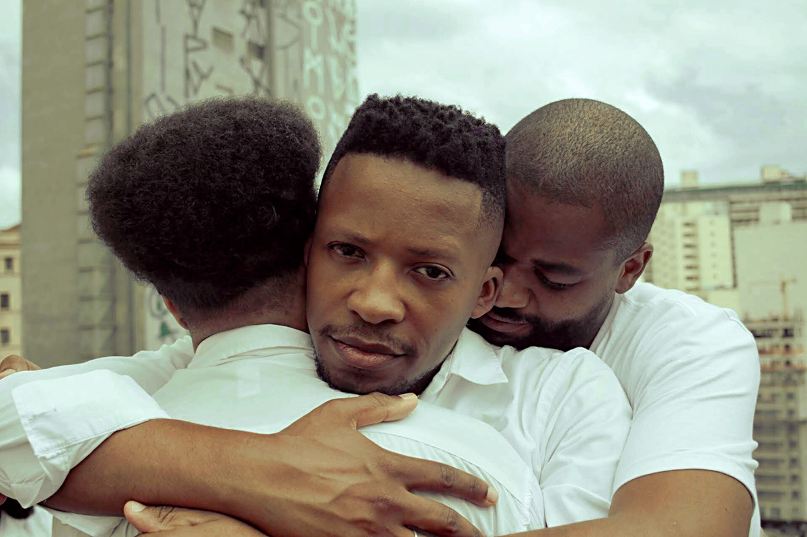

Derme à dentro BW
Derme a Dentro
"Derme a dentro" foi um projeto iniciado em Maio de 2019 com o propósito de discutir o que é masculinidade para homens pretos.
Convidei os modelos através de uma rede social e pra minha surpresa cinco rapazes de lugares, idades e sexualidades diferentes, se mostraram interessados em participar.
*Nenhum dos convidados é modelo profissional e a grande maioria nunca nem tinha se visto antes.
Homens pretos no mainstream quase sempre estão ligados a violência e a hipersexualidade, em filmes, nas músicas e infelizmente na história também.
Uma das maiores dificuldades que tive durante minha pesquisa foi achar fotos de homens pretos sorrindo ou mostrando qualquer tipo de vulnerabilidade.